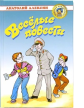

Уже не первое поколение ребят зачитывается произведениями Анатолия Алексина. В сборник вошли добрые и смешные повести замечательного писателя: "Необычайные похождения Севы Котлова" и "Саша и Шура". Для среднего школьного возраста.